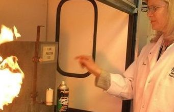

24/02/2017
January 15, 2015, East Rutherford, NJ - Today the U.S. Chemical Safety Board released a safety bulletin intended to inform industries that utilize anhydrous ammonia in bulk refrigeration operations on how to avoid a hazard referred to as hydraulic shock. The safety lessons were derived from an investigation into a 2010 anhydrous ammonia release that occurred at Millard Refrigerated Services Inc., located in Theodore, Alabama.
The accident occurred before 9:00 am on the morning of August 23, 2010. Two international ships were being loaded when the facility’s refrigeration system experienced “hydraulic shock” which is defined as a sudden, localized pressure surge in piping or equipment resulting from a rapid change in the velocity of a flowing liquid. The highest pressures often occur when vapor and liquid ammonia are present in a single line and are disturbed by a sudden change in volume.
This abnormal transient condition results in a sharp pressure rise with the potential to cause catastrophic failure of piping, valves, and other components - often prior to a hydraulic shock incident there is an audible “hammering” in refrigeration piping. The incident at Millard caused a roof-mounted 12-inch suction pipe to catastrophically fail, resulting in the release of more than 32,000 pounds of anhydrous ammonia.
The release led to one Millard employee sustaining injuries when he fell while attempting to escape from a crane was after it became engulfed in the traveling ammonia cloud. The large cloud traveled a quarter mile from the facility south toward an area where 800 contractors were working outdoors at a clean-up site for the Deepwater Horizon oil spill. A total of 152 offsite workers and ship crew members reported symptomatic illnesses from ammonia exposure. Thirty two of the offsite workers required hospitalization, four of them in an intensive care unit.
Chairperson Rafael Moure-Eraso said, “The CSB believes that if companies in the ammonia refrigeration industry follow the key lessons from its investigation into the accident at Millard Refrigeration Services, dangerous hydraulic shock events can be avoided - preventing injuries, environmental damage, and potential fatalities.”
Entitled, “Key Lessons for Preventing Hydraulic Shock in Industrial Refrigeration Systems” the bulletin describes that on the day before the incident, on August 22, 2010, the Millard facility experienced a loss of power that lasted over seven hours. During that time the refrigeration system was shut down. The next day the system regained power and was up and running, though operators reported some problems. While doing some troubleshooting an operator cleared alarms in the control system, which reset the refrigeration cycle on a group of freezer evaporators that were in the process of defrosting. The control system reset caused the freezer evaporator to switch directly from a step in the defrost cycle into refrigeration mode while the evaporator coil still contained hot, high-pressure gas.
The reset triggered a valve to open and low temperature liquid ammonia was fed back into all four evaporator coils before removing the hot ammonia gas. This resulted in both hot, high-pressure gas and extremely low temperature liquid ammonia to be present in the coils and associated piping at the same time. This caused the hot high-pressure ammonia gas to rapidly condense into a liquid. Because liquid ammonia takes up less volume than ammonia gas – a vacuum was created where the gas had been. The void sent a wave of liquid ammonia through the piping – causing the “hydraulic shock.”
The pressure surge ruptured the evaporator piping manifold inside one of the freezers and its associated 12-inch piping on the roof of the facility. An estimated 32,100 pounds of ammonia were released into the surrounding environment.
Investigator Lucy Tyler said, “The CSB notes that one key lesson is to avoid the manual interruption of evaporators in defrost and ensure control systems are equipped with password protection to ensure only trained and authorized personnel have the authority to manually override systems.“
The CSB also found that the evaporators at the Millard facility were designed so that one set of valves controlled four separate evaporator coils. As a result, the contents of all four coils connected to that valve group were involved in the hydraulic shock event – leading to a larger, more hazardous pressure surge.
As a result, the CSB notes that when designing ammonia refrigeration systems each evaporator coil should be controlled by a separate set of valves.
The CSB found that immediately after discovering the ammonia release, a decision was made to isolate the source of the leak while the refrigeration system was still operating instead of initiating an emergency shutdown. Shutting down the refrigeration system may have resulted in a smaller release, since all other ammonia-containing equipment associated with the failed rooftop piping continued to operate.
A final key lesson from the CSB’s investigation is that an emergency shutdown should be activated in the event of an ammonia release if a leak cannot be promptly isolated and controlled. Doing so can greatly reduce the amount of ammonia released during an accident.
The CSB is an independent federal agency charged with investigating serious chemical accidents. The agency's board members are appointed by the president and confirmed by the Senate. CSB investigations look into all aspects of chemical accidents, including physical causes such as equipment failure as well as inadequacies in regulations, industry standards, and safety management systems.
(Yonhap)
 Creative Multimedia Progmramming
Creative Multimedia Progmramming